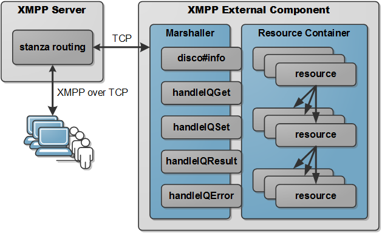

REST with XMPP Implementation Concept
The implementation concept for REST with XMPP provides a portable API for developing, exposing and accessing resources designed and implemented in compliance with the specification defined for this implementation. The API of this implementation concept is designed similar to the JAX-RS API that is part of the Java Enterprise Edition (JavaEE). This gives the developer the feeling of familiarity and rises the overall acceptance of this concept.
There are three ways to develop XMPP applications in order to make them available within an XMPP overlay network:
- User Service
A service provided by a regular user that is logged in. This service starts after log in and is only available until the user is presence.
- XMPP Server Plugin
An XMPP server specific plugin is part of the server itself. Such a plugin is mostly a package (like a jar file) that has to be liked to the server's plugin architecture. The disadvantage of this approach is that this plugin is XMPP server specific and may not be portable across to other servers.
- XMPP Component
An XMPP component is a stand-alone server instance that provides a service within a subdomain of the XMPP server to which this component is connected. The protocol between the XMPP server and the external component is standardized in XEP-0114: Jabber Component Protocol and makes such components implementation XMPP server independent and thus portable across to other servers.
Deployment Architecture
Resources are deployed inside a Resource Container in order to be available for exploration and access. Therefore, the implementation concept makes use of the container pattern, which is also applied to JavaEE applications. This pattern has several advantages: resources can be added and removed from the container during run-time, developer of resources have only to care about business logic and functionality inside the resource, and all other required interfaces to other resources and container functionalities are provided by the container.
The Resource Container itself in turn is part of an XMPP External Component in order to make this implementation server independent. However, the Resource Container design is also applicable to all other XMPP application deployments as well. Additionally, a Marshaller that implements fundamental functionalities for service discovery and processing of IQ stanza complements the architecture of this implementation concept that is depicted in the figure below.
The resources in the Resource Container are stored in a tree data structure. Each node of this tree in turn has a thread-safe HashMap that stores its child nodes as values and the sub-path of each node as key. Thus, collisions are prevented and this data structure provides for the basic operations an averaged time cost of O(1). Taken also the tree structure into account, the complexity for finding resources is O(p) while p is the number of path elements.
A resource in this implementation concept has to inherit from ResourceInstance which implements functionalities of a tree node. These functionalities comprises methods for requesting its path, sub-path, and parent node and adding, removing, and getting child resources. These functionalities are used by the container for instantiation, exploration, and resource methods invocation. There are two ways for deploying resources within the container: with a static sub-path or a dynamically generated UUID as sub-path. For this purpose two annotations are defined which are applicable to resources classes as illustrated in the listing below.
@Path("/compute")
public class ComputeManager extends ResourceInstance {
...
}
@PathID
public class VirtualMachine extends ResourceInstance {
...
}Classes annotated with @Path specify a static sub-path to which this resource is deployed. In contrast, classes annotated with @PathID are deployed under a sub-path consisting of a generated UUID. JAX-RS allows to specify path annotations also for methods and several path elements per annotation. The implementation concept applied here follows the approach that each resource is present only under a specific path. The reason for this is that these resources can have XMPP over REST methods and actions implemented for different representations or type sets. All these definitions are belong to only a single resource and are separated on that way.
XMPP resource methods are defined with the @XmppMethod annotation. The kind of this method is passed as parameter like illustrated in the figure below. Additionally, the input and output of this method have to be defined by the @Consumes and the @Produces annotation. Both annotations require definitions of which media types is consumed or produced by this method. Optionally a serializer can be defined that have to implement a default constructor and is used to serialize the representation passed to or from the method. A serializer allows for defining representation templates that are passed into XWADL documents and to provide additional functionalities by objects assigned to the method by the Marshaller.
@Path("/compute")
public class ComputeManager extends ResourceInstance {
@XmppMethod(XmppMethod.POST)
@Consumes(value = OcciXml.MEDIA_TYPE, serializer = FlavorMixin.class)
@Produces(value = UriText.MEDIA_TYPE, serializer = UriText.class)
public UriText createVM(FlavorMixin flavor) {
VirtualMachine vm = new VirtualMachine(flavor);
String path = this.addResource(vm);
return new UriText(path);
}
}Equivalent to XMPP resource methods, also annotations for XMPP resource actions are developed. An action have to be annotated with @XmppAction and an assigned action name. While the action name is obligated, the documentation can be assigned optionally. The primitive data types for the result element and the parameters are identified automatically by the Marshaller. However, only the following Java data types are permitted in this implementation: java.lang.String, java.lang.Integer, java.lang.Double, java.lang.Boolean, and java.net.URI. Moreover, for each parameter an unique name have to be defined as illustrated in the listing below. This allows for having different names among the REST with XMPP representation and its implementation.
@PathID
public class VirtualMachine extends ResourceInstance {
@XmppAction(value = "stop", documentation = "Stop this virtual machine")
@Result(documentation = "Returns true if the vm has been stopped successfully")
public Boolean stop( @Parameter(value = method, documentation = "The method used for stopping this vm") String meth) {
...
}
}The Marshaller is the key component in this implementation concept. It translates incoming and outgoing IQ stanza into XWADL or REST-XML documents. This is only be possible via well annotated methods as presented before.